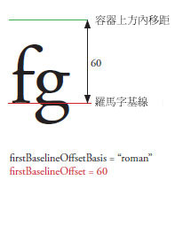
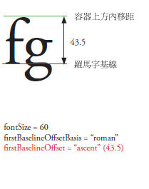
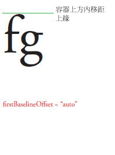
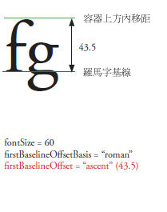
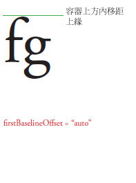

| 套件 | fl.text |
| 類別 | public class TLFTextField |
| 繼承 | TLFTextField |
| 語言版本: | ActionScript 3.0 |
| 產品版本: | Flash CS5 |
| 執行階段版本: | Flash Player 10, AIR 1.5 |
建立 TLFTextField 物件的方法與您使用 TextField 類別來建立文字欄位的方法相同。接著使用 textFlow 屬性，從 TLF 類別指定進階格式。例如：
import fl.text.TLFTextField; import flashx.textLayout.formats.TextLayoutFormat; import flashx.textLayout.elements.TextFlow; var myTLFTextField:TLFTextField = new TLFTextField(); addChild(myTLFTextField); myTLFTextField.x = 10; myTLFTextField.y = 10; myTLFTextField.width = 200 myTLFTextField.height = 100; myTLFTextField.text = "This is my text"; var myFormat:TextLayoutFormat = new TextLayoutFormat(); myFormat.textIndent = 8; myFormat.color = 0x336633; myFormat.fontFamily = "Arial, Helvetica, _sans"; myFormat.fontSize = 24; var myTextFlow:TextFlow = myTLFTextField.textFlow; myTextFlow.hostFormat = myFormat; myTextFlow.flowComposer.updateAllControllers();
相關 API 元素
 隱藏繼承公用屬性
隱藏繼承公用屬性 顯示繼承公用屬性
顯示繼承公用屬性| 屬性 | 定義自 | ||
|---|---|---|---|
 | accessibilityImplementation : AccessibilityImplementation
對此 InteractiveObject 實體目前的輔助功能實作 (AccessibilityImplementation)。 | InteractiveObject | |
| accessibilityProperties : AccessibilityProperties
此顯示物件的目前輔助功能選項。 | DisplayObject | |
| alpha : Number
指出所指定物件的 Alpha 透明度值。 | DisplayObject | |
| alwaysShowSelection : Boolean
當設定為 true 而且文字欄位不在焦點中時，Flash Player 便會將文字欄位中的選取範圍反白標示為淺藍色。 | TLFTextField | ||
| antiAliasType : String
對此文字欄位使用的消除鋸齒類型。 | TLFTextField | ||
| autoSize : String
控制文字欄位的自動調整大小和對齊方式。 | TLFTextField | ||
| background : Boolean
會指定文字欄位是否具有背景填色。 | TLFTextField | ||
| backgroundAlpha : Number
指定文字欄位背景的 Alpha 值。 | TLFTextField | ||
| backgroundColor : uint
指定文字欄位背景的顏色。 | TLFTextField | ||
| blendMode : String
來自 BlendMode 類別的值，會指定要使用何種混合模式。 | DisplayObject | |
| blendShader : Shader [唯寫]
設定用來混合前景和背景的著色器。 | DisplayObject | |
| blockProgression : Object
指定行位置為垂直或水平走向。 | TLFTextField | ||
| border : Boolean
會指定文字欄位是否具有邊框。 | TLFTextField | ||
| borderAlpha : Number
指定邊框的 Alpha 值。 | TLFTextField | ||
| borderColor : uint
指定文字欄位邊框的顏色。 | TLFTextField | ||
| borderWidth : Number
指定邊框的寬度。 | TLFTextField | ||
| bottomScrollV : int [唯讀]
整數 (從 1 開始的索引)，指出目前在指定之文字欄位中，可以看見的最底端字行。 | TLFTextField | ||
| buttonMode : Boolean
可指定此 sprite 的按鈕模式。 | Sprite | |
| cacheAsBitmap : Boolean
如果設定為 true，Flash 執行階段會快取顯示物件的內部點陣圖表示法。 | DisplayObject | |
| cacheAsBitmapMatrix : Matrix
如果為非 null，當 cacheAsBitmap 設定為 true 時，這個 Matrix 物件會定義顯示物件的顯示方法。 | DisplayObject | |
| caretIndex : int [唯讀]
插入點 (跳脫字元) 位置的索引。 | TLFTextField | ||
| columnCount : Object
文字欄的數目 (如果在重疊顯示時未定義，則採用預設值)。 | TLFTextField | ||
| columnGap : Object
指定欄與欄之間的間距大小 (以像素為單位)，如果重疊顯示時未定義，則採用預設值。 | TLFTextField | ||
| columnWidth : Object
以像素為單位的欄寬 (如果重疊顯示時未定義，則採用預設值)。 | TLFTextField | ||
| condenseWhite : Boolean
Boolean 值，指定在具有 HTML 文字或 TLF 標記的文字欄位中，是否移除額外的空白字元 (空格、斷行符號等等)。 | TLFTextField | ||
| constructor : Object
類別物件的參照或是特定物件實體的建構函數。 | Object | |
| contextMenu : NativeMenu
指定與此物件有關聯的快顯選單。 | InteractiveObject | |
| defaultTextFormat : flash.text:TextFormat
指定套用至新插入之文字 (例如，使用者所輸入的文字，或是以 replaceSelectedText() 方法插入的文字) 的格式。 | TLFTextField | ||
| direction : String
指定文字區塊內之文字的預設雙向內嵌層級。 | TLFTextField | ||
| displayAsPassword : Boolean
指定文字欄位是否為密碼文字欄位。 | TLFTextField | ||
| doubleClickEnabled : Boolean
會指定物件是否會收到 doubleClick 事件。 | InteractiveObject | |
| dropTarget : DisplayObject [唯讀]
指定要將 sprite 拖曳至或丟棄至哪個顯示物件上。 | Sprite | |
| embedFonts : Boolean
會指定是否要使用內嵌的字體外框顯示。 | TLFTextField | ||
| filters : Array
索引的陣列，其中包含目前和顯示物件相關的每個濾鏡物件。 | DisplayObject | |
| firstBaselineOffset : Object
指定容器中第一行的基線位置。 | TLFTextField | ||
| focusRect : Object
會指定這個物件是否會顯示焦點矩形。 | InteractiveObject | |
| graphics : Graphics [唯讀]
指定屬於此 sprite 物件的 Graphics 物件，其中可能會產生向量繪圖命令。 | Sprite | |
| gridFitType : String
對此文字欄位使用的格線符合類型。 | TLFTextField | ||
| height : Number
會指出顯示物件的高度，以像素為單位。 | DisplayObject | |
| hitArea : Sprite
指定用來當作 sprite 作用區域的另一個 sprite。 | Sprite | |
| htmlText : String
包含 HTML 表示方式的文字欄位內容。 | TLFTextField | ||
| length : int [唯讀]
文字欄位中的字元數。 | TLFTextField | ||
| loaderInfo : LoaderInfo [唯讀]
會傳回 LoaderInfo 物件，其中包含關於載入此顯示物件所屬之檔案的資訊。 | DisplayObject | |
| mask : DisplayObject
呼叫之顯示物件會以指定的 mask 物件遮蓋。 | DisplayObject | |
| maxChars : int
文字欄位可以包含的最大字元數，也就是使用者可輸入的字元數。 | TLFTextField | ||
| maxScrollH : int [唯讀]
scrollH 的最大值。 | TLFTextField | ||
| maxScrollV : int [唯讀]
scrollV 的最大值。 | TLFTextField | ||
| metaData : Object
如果中繼資料是透過 PlaceObject4 標籤與 SWF 檔案中的這個 DisplayObject 實體一同儲存，則會取得 DisplayObject 實體的中繼資料物件。 | DisplayObject | |
| mouseChildren : Boolean
判斷物件的子系是否支援啟用滑鼠或使用者輸入裝置。 | DisplayObjectContainer | |
| mouseEnabled : Boolean
指定此物件是否接收滑鼠或其他使用者輸入及訊息。 | InteractiveObject | |
| mouseWheelEnabled : Boolean
Boolean 值，指出當使用者按一下文字欄位並滾動滑鼠滾輪時，Flash Player 是否會自動捲動多行文字欄位。 | TLFTextField | ||
| mouseX : Number [唯讀]
指出滑鼠或使用者輸入裝置位置的 x 座標，以像素為單位。 | DisplayObject | |
| mouseY : Number [唯讀]
指出滑鼠或使用者輸入裝置位置的 y 座標，以像素為單位。 | DisplayObject | |
| multiline : Boolean
指出文字欄位是否為多行文字欄位。 | TLFTextField | ||
| name : String
指出 DisplayObject 的實體名稱。 | DisplayObject | |
| needsSoftKeyboard : Boolean
指定虛擬鍵盤 (螢幕上的軟體鍵盤) 是否應在此 InteractiveObject 實體接收到焦點時顯示。 | InteractiveObject | |
| numChildren : int [唯讀]
傳回此物件的子系數量。 | DisplayObjectContainer | |
| numLines : int [唯讀]
會定義多行文字欄位中的文字行數。 | TLFTextField | ||
| opaqueBackground : Object
會指定顯示物件是否不透明，並具有特定背景顏色。 | DisplayObject | |
| paddingBottom : Object
以像素為單位的下方內移距 (如果重疊顯示時未定義，則採用預設值)。 | TLFTextField | ||
| paddingLeft : Object
以像素為單位的左方內移距 (如果重疊顯示時未定義，則採用預設值)。 | TLFTextField | ||
| paddingRight : Object
以像素為單位的右方內移距 (如果重疊顯示時未定義，則採用預設值)。 | TLFTextField | ||
| paddingTop : Object
以像素為單位的上方內移距 (如果重疊顯示時未定義，則採用預設值)。 | TLFTextField | ||
| parent : DisplayObjectContainer [唯讀]
指出包含此顯示物件的 DisplayObjectContainer 物件。 | DisplayObject | |
| pixelMaxScrollV : int [唯讀]
pixelScrollV 的最大值。 | TLFTextField | ||
| pixelScrollV : int
文字欄位中文字的垂直位置 (以像素為單位)，與以線條為基礎的 scrollV 不同。 | TLFTextField | ||
| restrict : String
指出使用者能夠輸入文字欄位中的字元組。 | TLFTextField | ||
| root : DisplayObject [唯讀]
對載入之 SWF 檔案的顯示物件而言，root 屬性就是該 SWF 檔案所呈現之顯示清單樹狀結構部分的最上層顯示物件。 | DisplayObject | |
| rotation : Number
指出 DisplayObject 實體的旋轉度數 (從該物件原本方向算起)。 | DisplayObject | |
| rotationX : Number
表示 DisplayObject 實體相對於 3D 父輩容器從原始方向旋轉的 x 軸旋轉 (以度數為單位)。 | DisplayObject | |
| rotationY : Number
表示 DisplayObject 實體相對於 3D 父輩容器從原始方向旋轉的 y 軸旋轉 (以度數為單位)。 | DisplayObject | |
| rotationZ : Number
表示 DisplayObject 實體相對於 3D 父輩容器從原始方向旋轉的 z 軸旋轉 (以度數為單位)。 | DisplayObject | |
| scale9Grid : Rectangle
目前產生效用的縮放格線。 | DisplayObject | |
| scaleX : Number
指出從註冊點套用的物件水平縮放 (百分比)。 | DisplayObject | |
| scaleY : Number
指出從物件註冊點套用的物件垂直縮放 (百分比)。 | DisplayObject | |
| scaleZ : Number
指出從物件註冊點套用的物件深度縮放 (百分比)。 | DisplayObject | |
| scrollH : int
目前的水平捲動位置。 | TLFTextField | ||
| scrollRect : Rectangle
顯示物件的捲動矩形範圍。 | DisplayObject | |
| scrollV : int
文字欄位中文字的垂直位置。 | TLFTextField | ||
| selectable : Boolean
指出文字欄位是否可選取的 Boolean 值。 | TLFTextField | ||
| selectionBeginIndex : int [唯讀]
目前選取範圍中，第一個字元的字元索引值 (從零開始)。 | TLFTextField | ||
| selectionEndIndex : int [唯讀]
目前選取範圍中，最後一個字元的字元索引值 (從零開始)。 | TLFTextField | ||
| sharpness : Number
清晰度不適用於 TLF 文字欄位。 | TLFTextField | ||
| softKeyboard : String
控制軟體鍵盤的外觀。 | InteractiveObject | |
| softKeyboardInputAreaOfInterest : Rectangle
定義顯示軟體鍵盤時，應保留於螢幕上的區域 (iOS 未提供)。 | InteractiveObject | |
| soundTransform : flash.media:SoundTransform
控制此 Sprite 的聲音。 | Sprite | |
| stage : Stage [唯讀]
顯示物件的「舞台」。 | DisplayObject | |
| styleSheet : StyleSheet
TLF 文字欄位的樣式表。 | TLFTextField | ||
| tabChildren : Boolean
判斷物件的子系是否支援啟用定位鍵。 | DisplayObjectContainer | |
| tabEnabled : Boolean
會指定這個物件是否在停駐點順序中。 | InteractiveObject | |
| tabIndex : int
會指定 SWF 檔中的物件停駐點順序。 | InteractiveObject | |
| text : String
做為文字欄位中目前文字的字串。 | TLFTextField | ||
| textColor : uint
文字欄位中文字的顏色，以十六進位格式表示。 | TLFTextField | ||
| textFlow : flashx.textLayout.elements:TextFlow
使用此屬性從 flashx 套件的 TLF 類別，將格式指定至 TLFTextField 實體。 | TLFTextField | ||
| textHeight : Number [唯讀]
文字的高度，以像素為單位。 | TLFTextField | ||
| textSnapshot : flash.text:TextSnapshot [唯讀]
傳回此 DisplayObjectContainer 實體的 TextSnapshot 物件。 | DisplayObjectContainer | |
| textWidth : Number [唯讀]
文字的寬度，以像素為單位。 | TLFTextField | ||
| thickness : Number
thickness 屬性不適用於 TLF 文字欄位。 | TLFTextField | ||
| tlfMarkup : String
設定或取得 TLF 文字欄位中的文字 TLF 標記。 | TLFTextField | ||
| transform : flash.geom:Transform
這是一個物件，具有和顯示物件的矩陣、顏色轉換和像素邊界有關的屬性。 | DisplayObject | |
| type : String
文字欄位的類型。 | TLFTextField | ||
| useHandCursor : Boolean
指示當指標滑入 Sprite，且其 buttonMode 屬性設為 true 時，是否要出現指示手掌 (手掌游標) 的 Boolean 值。 | Sprite | |
| useRichTextClipboard : Boolean
指定是否將文字格式連同文字一起複製到剪貼簿。 | TLFTextField | ||
| verticalAlign : String
垂直對齊或齊行 (如果重疊顯示時未定義，則採用預設值)。 | TLFTextField | ||
| visible : Boolean
不管是否看得見顯示物件。 | DisplayObject | |
| width : Number
會指出顯示物件的寬度，以像素為單位。 | DisplayObject | |
| wordWrap : Boolean
指出文字欄位是否具有文字換行功能的 Boolean 值。 | TLFTextField | ||
| x : Number
指出 DisplayObject 實體相對於父輩 DisplayObjectContainer 之區域座標的 x 座標。 | DisplayObject | |
| y : Number
指出 DisplayObject 實體相對於父輩 DisplayObjectContainer 之區域座標的 y 座標。 | DisplayObject | |
| z : Number
表示 DisplayObject 實體相對於 3D 父輩容器的 z 座標位置 (沿著 z 軸)。 | DisplayObject | |
| 方法 | 定義自 | ||
|---|---|---|---|
TLFTextField 物件的建構函式。 | TLFTextField | ||
|
將 DisplayObject 子實體加入至此 DisplayObjectContainer 實體。 | DisplayObjectContainer | |
|
將 DisplayObject 子實體加入至此 DisplayObjectContainer 實體。 | DisplayObjectContainer | |
| addEventListener(type:String, listener:Function, useCapture:Boolean = false, priority:int = 0, useWeakReference:Boolean = false):void
會在 EventDispatcher 物件註冊事件偵聽程式，以便讓偵聽程式收到事件的通知。 | EventDispatcher | |
會將 newText 參數所指定的字串附加到文字欄位之文字的尾端。 | TLFTextField | ||
|
指出安全性限制是否會造成傳回的清單 (可用指定的 point 點呼叫 DisplayObjectContainer.getObjectsUnderPoint() 方法來取得) 省略任何顯示物件。 | DisplayObjectContainer | |
|
判斷指定的顯示物件是否為 DisplayObjectContainer 實體的子系，或為實體本身。 | DisplayObjectContainer | |
|
會將事件傳送到事件流程。 | EventDispatcher | |
|
傳回可定義顯示物件區域 (相對於 targetCoordinateSpace 物件的座標系統) 的矩形。 | DisplayObject | |
會傳回做為字元之範圍框的矩形。 | TLFTextField | ||
會在 x 和 y 參數所指定的點，傳回字元的索引值 (從零開始)。 | TLFTextField | ||
|
傳回存在於指定索引位置的子顯示物件實體。 | DisplayObjectContainer | |
|
傳回具有指定名稱的子顯示物件。 | DisplayObjectContainer | |
|
傳回 child DisplayObject 實體的索引位置。 | DisplayObjectContainer | |
指定字元索引，會傳回相同段落中第一個字元的索引。 | TLFTextField | ||
對於使用 <img> 標籤新增至 HTML 格式之文字欄位的影像或 SWF 檔，傳回指定之 id 的 DisplayObject 參考。 | TLFTextField | ||
會在 x 和 y 參數所指定的點，傳回字行的索引值 (從零開始)。 | TLFTextField | ||
會傳回字行的索引值 (從零開始)，該字行包含 charIndex 參數所指定的字元。 | TLFTextField | ||
會傳回特定文字行中的字元數。 | TLFTextField | ||
會傳回關於指定之文字行的公制字資訊。 | TLFTextField | ||
會傳回 lineIndex 參數所指定之字行中，第一個字元的字元索引。 | TLFTextField | ||
會傳回 lineIndex 參數所指定之字行的文字。 | TLFTextField | ||
|
傳回位於指定點底下，且屬於此 DisplayObjectContainer 實體之子系 (或孫系，以下類推) 的物件陣列。 | DisplayObjectContainer | |
指定字元索引，會傳回包含指定之字元的段落長度。 | TLFTextField | ||
|
根據 targetCoordinateSpace 參數所定義的座標系統，並排除形狀上的任何筆畫，傳回可定義顯示物件邊界的矩形。 | DisplayObject | |
會傳回 TextFormat 物件，包含 beginIndex 和 endIndex 參數所指定之文字範圍的格式資訊。 | TLFTextField | ||
|
將 point 物件從「舞台」(全域) 座標轉換成顯示物件的 (區域) 座標。 | DisplayObject | |
|
將二維點從「舞台」(全域) 座標轉換為三維顯示物件的 (區域) 座標。 | DisplayObject | |
|
會檢查 EventDispatcher 物件是否有對特定的事件類型註冊偵聽程式。 | EventDispatcher | |
|
指出物件是否有已定義的指定屬性。 | Object | |
|
評估顯示物件的範圍框，看它是否與 obj 顯示物件的範圍框重疊或相交。 | DisplayObject | |
|
評估顯示物件，看它是否與 x 和 y 參數所指定的點重疊或相交。 | DisplayObject | |
如果指定的 fontName 和 fontStyle 提供內嵌字體，而 Font.fontType 為 flash.text.FontType.EMBEDDED_CFF 時，則傳回 true。 | TLFTextField | ||
|
指出 Object 類別的實體是否位於指定為參數的物件原型鏈中。 | Object | |
|
將三維顯示物件的 (區域) 座標的三維點轉換為「舞台」(全域) 座標中的二維點。 | DisplayObject | |
|
將 point 物件從顯示物件的 (區域) 座標轉換成「舞台」(全域) 座標。 | DisplayObject | |
|
指出指定的屬性是否存在，以及是否可列舉。 | Object | |
|
將指定的 child DisplayObject 實體從 DisplayObjectContainer 實體的子清單中移除。 | DisplayObjectContainer | |
|
從 DisplayObjectContainer 子清單中的指定索引位置移除子 DisplayObject。 | DisplayObjectContainer | |
|
將所有 child DisplayObject 實體從 DisplayObjectContainer 實體的子清單中移除。 | DisplayObjectContainer | |
|
會從 EventDispatcher 物件移除偵聽程式。 | EventDispatcher | |
會以 value 參數的內容取代目前的選取範圍。 | TLFTextField | ||
會以 newText 參數的內容，取代 beginIndex 和 endIndex 參數所指定的字元範圍。 | TLFTextField | ||
|
升起顯示虛擬鍵盤。 | InteractiveObject | |
|
變更顯示物件容器中現有子系的位置。 | DisplayObjectContainer | |
|
為迴圈作業設定動態屬性的可用性。 | Object | |
根據第一個和最後一個字元指定的索引值 (以 beginIndex 和 endIndex 參數指定)，設定選取文字。 | TLFTextField | ||
會將 format 參數所指定的文字格式，套用至文字欄位中的指定文字。 | TLFTextField | ||
|
讓使用者拖曳指定的 sprite。 | Sprite | |
|
讓使用者將指定的 Sprite 拖曳至觸控裝置上。 | Sprite | |
|
遞迴停止執行所有 MovieClips 的時間軸根源於此物件。 | DisplayObjectContainer | |
|
結束 startDrag() 方法。 | Sprite | |
|
結束觸控裝置使用的 startTouchDrag() 方法。 | Sprite | |
|
替換兩個指定子物件的 z 順序 (深度階層，由前至後順序)。 | DisplayObjectContainer | |
|
在子清單的兩個指定索引位置，替換子物件的 z 順序 (深度階層，由前至後順序)。 | DisplayObjectContainer | |
|
傳回代表此物件的字串，根據地區特定慣例進行格式化。 | Object | |
|
會傳回指定之物件的字串形式。 | Object | |
|
會傳回指定之物件的基本值。 | Object | |
|
檢查此 EventDispatcher 物件是否已註冊事件偵聽程式，或者此物件的任何祖系已為特定事件類型註冊事件偵聽程式。 | EventDispatcher | |
| 事件 | 摘要 | 定義自 | ||
|---|---|---|---|---|
| [廣播事件] 當 Flash Player 或 AIR 應用程式取得作業系統焦點並成為作用中時傳送。 | EventDispatcher | ||
| 當顯示物件加入顯示清單中時傳送。 | DisplayObject | ||
| 會在顯示物件加入舞台上的顯示清單時，以直接或是透過加入包含該顯示物件之子樹狀結構的方式傳送。 | DisplayObject | ||
| 在修改控制項值之後傳送，不同於在修改值之前傳送的 textInput 事件。 | TLFTextField | |||
| 當使用者從文字快顯選單中選取「清除」(或「刪除」) 時傳送。 | InteractiveObject | ||
| 會當使用者在相同的 InteractiveObject 上方按下並放開使用者的指向裝置主按鈕時傳送。 | InteractiveObject | ||
| 當使用者手勢在 AIR 應用程式中觸發與此互動式物件相關聯的快顯選單時傳送。 | InteractiveObject | ||
| 當使用者針對複製作業啟動平台特有的快速鍵組合或從文字快顯選單中選取「複製」時傳送。 | InteractiveObject | ||
| 當使用者針對剪下作業啟動平台特有的快速鍵組合或從文字快顯選單中選取「剪下」時傳送。 | InteractiveObject | ||
| [廣播事件] 當 Flash Player 或 AIR 應用程式失去作業系統焦點並成為非作用中時傳送。 | EventDispatcher | ||
| 在 InteractiveObject 物件的 doubleClickEnabled 旗標設為 true 的情況下，當使用者在相同的物件上方連續兩次快速按下並放開指標裝置主要按鈕時傳送。 | InteractiveObject | ||
| [廣播事件] 當播放磁頭進入新影格時傳送。 | DisplayObject | ||
| [廣播事件] 當播放磁頭結束目前影格時傳送。 | DisplayObject | ||
| 當顯示物件取得焦點之後傳送。 | InteractiveObject | ||
| 當顯示物件失去焦點時傳送。 | InteractiveObject | ||
| [廣播事件] 在影格顯示物件的建構函式執行之後，且影格指令碼執行之前傳送。 | DisplayObject | ||
| 當使用者沿著觸控面與 InteractiveObject 實體建立接觸點 (例如沿著 Apple TV 的 Siri Remote 觸控面點選)，某些裝置可能也會將此接觸解譯為數個觸控事件的組合。 | InteractiveObject | ||
| 當使用在觸控裝置上的同一個 InteractiveObject 實體上按下兩個接觸點後送出 (例如在行動電話或平板電腦觸控螢幕的顯示物件上方，以兩支手指按下後鬆開)。 | InteractiveObject | ||
| 當使用者在觸控裝置上，將接觸點移動到 InteractiveObject 實體上方後傳送 (例如，在行動電話或平板電腦觸控螢幕的顯示物件上，由左向右移動手指)。 | InteractiveObject | ||
| 當使用者在 InteractiveObject 實體的接觸點上做出旋轉手勢後傳送 (例如兩指觸摸行動電話或平板電腦的觸控螢幕，然後手指在顯示物件上旋轉)。 | InteractiveObject | ||
| 當使用者在與 InteractiveObject 實體的某個接觸點上做出揮動手勢後傳送 (例如，三指併在一起觸碰行動電話或平板電腦的觸控螢幕，然後在顯示物件上快速平行移動手指)。 | InteractiveObject | ||
| 當使用者與 InteractiveObject 實體建立接觸點，然後在觸控裝置上點一下後送出 (例如，將多根手指放到行動電話或平板電腦觸控螢幕的顯示物件上以開啟選單，然後其中一根手點一下，選取選單項目)。 | InteractiveObject | ||
| 當使用者在 InteractiveObject 實體的某個接觸點上做出放大縮小手勢後傳送 (例如兩指併在一起觸摸行動電話或平板電腦的觸控螢幕，然後手指在顯示物件上快速張開)。 | InteractiveObject | ||
| 這個事件會送出至任何支援 IME 內嵌輸入的用戶端應用程式。 | InteractiveObject | ||
| 會當使用者按下按鍵時傳送。 | InteractiveObject | ||
| 當使用者嘗試使用鍵盤瀏覽變更焦點時傳送。 | InteractiveObject | ||
| 會當使用者放開按鍵時傳送。 | InteractiveObject | ||
| 當使用者按一下已啟用 HTML 功能之文字欄位中的超連結，並且其中的 URL 是以 "event:" 開始時，便會傳送。 | TLFTextField | |||
| 當使用者在相同的 InteractiveObject 上方按下並放開使用者的指向裝置中間按鈕時傳送。 | InteractiveObject | ||
| 當使用者將指向裝置的中間按鈕移至 InteractiveObject 實體上方按下時傳送。 | InteractiveObject | ||
| 當使用者將指向裝置按鈕移至 InteractiveObject 實體上方放開時傳送。 | InteractiveObject | ||
| 當使用者將指向裝置按鈕移至 InteractiveObject 實體上方按下時傳送。 | InteractiveObject | ||
| 會當使用者嘗試使用指向裝置變更焦點時傳送。 | InteractiveObject | ||
| 會當指向裝置停在 InteractiveObject 上方的情況下使用者將其移動時傳送。 | InteractiveObject | ||
| 會當使用者將指向裝置移開 InteractiveObject 實體時傳送。 | InteractiveObject | ||
| 會當使用者將指向裝置移至 InteractiveObject 實體上方時傳送。 | InteractiveObject | ||
| 當使用者將指向裝置按鈕移至 InteractiveObject 實體上方放開時傳送。 | InteractiveObject | ||
| 當滑鼠滾輪在 InteractiveObject 實體上方轉動時傳送。 | InteractiveObject | ||
| 當使用者釋放手勢時，由拖曳初始程式 InteractiveObject 傳送。 | InteractiveObject | ||
| 已在目標 InteractiveObject 上放下拖曳的物件，而且已呼叫 DragManager.acceptDragDrop() 接受該放開的資料時，由此目標 InteractiveObject 傳送。 | InteractiveObject | ||
| 當手勢進入 InteractiveObject 的邊界時，由此 InteractiveObject 傳送。 | InteractiveObject | ||
| 當手勢離開 InteractiveObject 的邊界時，由此 InteractiveObject 傳送。 | InteractiveObject | ||
| 當拖曳手勢還留在 InteractiveObject 的邊界內，由此 InteractiveObject 持續傳送。 | InteractiveObject | ||
| 在呼叫 DragManager.doDrag() 進行拖曳作業初期，由指定做為拖曳初始程式的 InteractiveObject 傳送。 | InteractiveObject | ||
| 在呼叫 DragManager.doDrag() 進行拖曳作業期間，由指定做為拖曳初始程式的 InteractiveObject 傳送。 | InteractiveObject | ||
| 當使用者針對貼上作業啟動平台特有的快速鍵組合或從文字快顯選單中選取「貼上」時傳送。 | InteractiveObject | ||
| 在使用者將作用中觸控筆往下移至超過螢幕鄰近偵測邊框時傳送。 | InteractiveObject | ||
| 在使用者將作用中觸控筆提到螢幕鄰近偵測邊框時傳送。 | InteractiveObject | ||
| 在使用者將作用中觸控筆移到螢幕上方，而其餘仍在鄰近偵測邊框內時傳送。 | InteractiveObject | ||
| 在使用者將作用中觸控筆移出這個 InteractiveObject 之外，而其餘仍在螢幕的鄰近偵測邊框內時傳送。 | InteractiveObject | ||
| 在使用者直接將作用中觸控筆移到這個 InteractiveObject 上方，而其餘仍在螢幕的鄰近偵測邊框內時傳送。 | InteractiveObject | ||
| 在使用者將作用中觸控筆移出這個 InteractiveObject 及其任一子系之外，而其餘仍在螢幕的鄰近偵測邊框內時傳送。 | InteractiveObject | ||
| 在使用者透過這個 InteractiveObject，從顯示清單中後代的物件樹狀結構之外移動作用中觸控筆時傳送 (而其餘仍在螢幕的鄰近偵測邊框內)。 | InteractiveObject | ||
| 當使用者第一次按下 InteractiveObject 實體上方的按鈕，然後將指向裝置滑出 InteractiveObject 實體之後即放開指向裝置上的按鈕時傳送。 | InteractiveObject | ||
| 會當顯示物件將要從顯示清單移除時傳送。 | DisplayObject | ||
| 會在顯示物件即將從顯示清單移除時，以直接或是透過移除包含該顯示物件之子樹狀結構的方式傳送。 | DisplayObject | ||
| [廣播事件] 當顯示清單將要更新和顯示時傳送。 | DisplayObject | ||
| 當使用者在相同的 InteractiveObject 上方按下並放開使用者的指向裝置右邊按鈕時傳送。 | InteractiveObject | ||
| 當使用者將指向裝置按鈕移至 InteractiveObject 實體上方按下時傳送。 | InteractiveObject | ||
| 當使用者將指向裝置按鈕移至 InteractiveObject 實體上方放開時傳送。 | InteractiveObject | ||
| 會當使用者將指向裝置移開 InteractiveObject 實體時傳送。 | InteractiveObject | ||
| 會當使用者將指向裝置移至 InteractiveObject 實體上方時傳送。 | InteractiveObject | ||
| 在使用者捲動之後，由 TextField 物件傳送。 | TLFTextField | |||
| 當使用者針對全選作業啟動平台特有的快速鍵組合或從文字快顯選單中選取「全選」時傳送。 | InteractiveObject | ||
| 升起顯示軟體鍵盤之後立即傳送。 | InteractiveObject | ||
| 升起顯示軟體鍵盤前立即傳送。 | InteractiveObject | ||
| 降下隱藏軟體鍵盤之後立即傳送。 | InteractiveObject | ||
| 在物件的 tabChildren 旗標值變更時傳送。 | InteractiveObject | ||
| 在物件的 tabEnabled 旗標變更時傳送。 | InteractiveObject | ||
| 在物件的 tabIndex 屬性值變更時傳送。 | InteractiveObject | ||
| 當使用者輸入一個或多個文字字元時，Flash Player 便會傳送 textInput 事件。 | TLFTextField | |||
| 當使用者在第一次接觸觸控裝置後傳送 (例如手指觸摸行動電話或平板電腦的觸控螢幕)。 | InteractiveObject | ||
| 當使用者在觸控裝置上移除接觸點後傳送 (例如在行動電話或平板電腦觸控螢幕上移開手指)。 | InteractiveObject | ||
| 當使用者觸控裝置時傳送，並且連續不斷地傳送，直到接觸點移除為止。 | InteractiveObject | ||
| 當使用者在觸控裝置中，將接觸點移出 InteractiveObject 實體後送出 (例如在行動電話或平板電腦的觸控螢幕上，將手指從顯示物件移至另一個顯示物件)。 | InteractiveObject | ||
| 當使用者在觸控裝置中將接觸點移至 InteractiveObject 實體上方後送出 (例如在行動電話或平板電腦的觸控螢幕上，將手指從顯示物件外面的某一點，往顯示物件上方拖曳)。 | InteractiveObject | ||
| 當使用者在觸控裝置上，將接觸點從 InteractiveObject 實體移出後送出 (例如，在行動電話或平板電腦的觸控螢幕上，將手指從顯示物件上方拖曳到顯示物件以外)。 | InteractiveObject | ||
| 當使用者在觸控裝置中將接觸點移至 InteractiveObject 實體上方後送出 (例如在行動電話或平板電腦的觸控螢幕上，將手指從顯示物件外面的某一點，往顯示物件上方拖曳)。 | InteractiveObject | ||
| 當使用者在觸控裝置的同一個 InteractiveObject 實體上，在原先開始接觸點放開後送出 (例如在行動電話或平板電腦觸控螢幕上的顯示物件上方，以手指按下某個點後又鬆開)。 | InteractiveObject | ||
alwaysShowSelection | 屬性 |
alwaysShowSelection:Boolean| 語言版本: | ActionScript 3.0 |
| 執行階段版本: | Flash Player 10, AIR 1.5 |
當設定為 true 而且文字欄位不在焦點中時，Flash Player 便會將文字欄位中的選取範圍反白標示為淺藍色。當設定為 false 而且文字欄位不在焦點中時，Flash Player 便不會反白標示文字欄位中的選取範圍。
範例：
package
{
import flash.display.Sprite;
import fl.text.TLFTextField;
import flash.text.TextFieldType;
public class TLFTextField_alwaysShowSelection extends Sprite
{
public function TLFTextField_alwaysShowSelection()
{
var label1:TLFTextField = createTLFTextField(0, 20, 200, 20);
label1.text = "This text is selected.";
label1.setSelection(0, 9);
label1.alwaysShowSelection = true;
var label2:TLFTextField = createTLFTextField(0, 50, 200, 20);
label2.text = "Drag to select some of this text.";
}
private function createTLFTextField(x:Number, y:Number, width:Number, height:Number):TLFTextField
{
var result:TLFTextField = new TLFTextField();
result.x = x;
result.y = y;
result.width = width;
result.height = height;
addChild(result);
return result;
}
}
}
預設值為 false。
實作
public function get alwaysShowSelection():Boolean public function set alwaysShowSelection(value:Boolean):void相關 API 元素
antiAliasType | 屬性 |
antiAliasType:String| 語言版本: | ActionScript 3.0 |
| 執行階段版本: | Flash Player 10, AIR 1.5 |
對此文字欄位使用的消除鋸齒類型。 請針對此屬性使用 flash.text.AntiAliasType 常數。 只有在字體是嵌入時 (embedFonts 屬性設定為 true) 才能控制這個設定。
若要設定此屬性，請使用下列字串值：
| 字串值 | 說明 |
|---|---|
flash.text.AntiAliasType.NORMAL | 套用一般文字消除鋸齒。 這能符合 Flash Player 7 和更早版本所使用的消除鋸齒類型。 |
flash.text.AntiAliasType.ADVANCED | 套用進階消除鋸齒，讓文字更易於辨識。(這項功能從 Flash Player 8 開始提供)。 進階消除鋸齒可呈現超高品質的小字體外觀。 特別適用於含有許多小型文字的應用程式。 大於 48 點的字體則不建議使用進階消除鋸齒。 |
預設值為 flash.text.AntiAliasType.NORMAL。
實作
public function get antiAliasType():String public function set antiAliasType(value:String):void相關 API 元素
autoSize | 屬性 |
autoSize:String| 語言版本: | ActionScript 3.0 |
| 執行階段版本: | Flash Player 10, AIR 1.5 |
控制文字欄位的自動調整大小和對齊方式。 TextFieldAutoSize 常數的可接受值：TextFieldAutoSize.NONE (預設值)，TextFieldAutoSize.LEFT、TextFieldAutoSize.RIGHT 和 TextFieldAutoSize.CENTER。
如果 autoSize 設定為 TextFieldAutoSize.NONE (預設值)，就不會調整大小。
如果 autoSize 設定為 TextFieldAutoSize.LEFT，就會將文字視為靠左對齊的文字，這表示文字欄位的左方邊界會維持固定，而且文字欄位的單一字行若有任何調整大小的行為，都會發生在右方邊界。 如果文字包含斷行符號 (例如，"\n" 或 "\r")，也會調整底部的大小，以配合下一行文字。 如果 wordWrap 也設定為 true，則只有文字欄位底部才會調整大小，右方邊界則維持不變。
如果 autoSize 設定為 TextFieldAutoSize.RIGHT，就會將文字視為靠右對齊的文字，這表示文字欄位的右方邊界會維持固定，而且文字欄位的單一字行若有任何調整大小的行為，都會發生在左方邊界。 如果文字包含斷行符號 (例如，"\n" 或 "\r")，也會調整底部的大小，以配合下一行文字。 如果 wordWrap 也設定為 true，則只有文字欄位底部才會調整大小，左方邊界則維持不變。
如果 autoSize 設定為 TextFieldAutoSize.CENTER，則文字會被視為置中對齊的文字，表示文字欄位的單一字行若有任何調整大小的行為，都會平均分配到左右方的邊界。 如果文字包含斷行符號 (例如，"\n" 或 "\r")，也會調整底部的大小，以配合下一行文字。 如果 wordWrap 也設定為 true，則只有文字欄位底部才會調整大小，左右方邊界則維持不變。
實作
public function get autoSize():String public function set autoSize(value:String):void擲回值
ArgumentError — 指定的 autoSize 不是 flash.text.TextFieldAutoSize 的成員。
|
相關 API 元素
background | 屬性 |
backgroundAlpha | 屬性 |
backgroundAlpha:Number| 語言版本: | ActionScript 3.0 |
| 執行階段版本: | Flash Player 10, AIR 1.5 |
指定文字欄位背景的 Alpha 值。背景的 Alpha 可以設定成介於 0 (不可見) 與 1 (不透明) 之間的任何值。即使目前沒有背景，您仍然可以擷取或設定這個屬性，不過只有將文字欄位的 background 屬性設定為 true 時，才能看見 Alpha 效果。
預設值為 1.0。
實作
public function get backgroundAlpha():Number public function set backgroundAlpha(value:Number):void相關 API 元素
backgroundColor | 屬性 |
blockProgression | 屬性 |
blockProgression:Object| 語言版本: | ActionScript 3.0 |
| 產品版本: | Flash CS5 |
| 執行階段版本: | Flash Player 10, AIR 1.5 |
指定行位置為垂直或水平走向。行由上到下 (BlockProgression.TB，用於水平文字) 排列，或由右向左 (BlockProgression.RL，用於垂直文字) 排列。
有效值為 flashx.textLayout.formats.BlockProgression.RL、flashx.textLayout.formats.BlockProgression.TB、flashx.textLayout.formats.FormatValue.INHERIT。
如果重疊顯示時未定義此屬性，則此屬性將繼承祖系的值。如果沒有任何祖系設定了此屬性，則此屬性的值就會是 TB。
預設值為 undefined (indicates not set)。
實作
public function get blockProgression():Object public function set blockProgression(value:Object):void相關 API 元素
border | 屬性 |
borderAlpha | 屬性 |
borderAlpha:Number| 語言版本: | ActionScript 3.0 |
| 執行階段版本: | Flash Player 10, AIR 1.5 |
指定邊框的 Alpha 值。邊框的 Alpha 可以設定成介於 0 (不可見) 與 1 (不透明) 之間的任何值。即使目前沒有邊框，您仍然可以擷取或設定這個屬性，不過只有將文字欄位的 border 屬性設定為 true 時，才能看見 Alpha 效果。
預設值為 1.0。
實作
public function get borderAlpha():Number public function set borderAlpha(value:Number):void相關 API 元素
borderColor | 屬性 |
borderWidth | 屬性 |
borderWidth:Number| 語言版本: | ActionScript 3.0 |
| 執行階段版本: | Flash Player 10, AIR 1.5 |
指定邊框的寬度。邊框的寬度可以設為介於 1 與 100 之間的任何值。即使目前沒有邊框，您仍然可以擷取或設定這個屬性，不過只有在文字欄位的 border 屬性設定為 true 時，才能看見這個寬度。
計算文字欄位的寬度或高度時，邊框的寬度會列入計算。若要取得文字容器的寬度或高度，但不包含邊框在內，請從寬度或高度值減去 borderWidth 兩次。
例如，txtHeight = tlf.height - (2 tlf.borderwidth);。
預設值為 1。
實作
public function get borderWidth():Number public function set borderWidth(value:Number):void相關 API 元素
bottomScrollV | 屬性 |
caretIndex | 屬性 |
caretIndex:int [唯讀] | 語言版本: | ActionScript 3.0 |
| 執行階段版本: | Flash Player 10, AIR 1.5 |
插入點 (跳脫字元) 位置的索引。 如果沒有顯示插入點，其值就是您將焦點還原至欄位時的插入點位置 (通常會是插入點的最後位置，不曾有過焦點時則會是 0)。
合併選取範圍索引從零開始記算 (例如，第一個位置是 0，第二個位置是 1，依此類推)。
範例：
package
{
import flash.display.Sprite;
import flash.events.MouseEvent;
import fl.text.TLFTextField;
import flash.text.TextFieldType;
public class TLFTextField_caretIndex extends Sprite
{
public function TLFTextField_caretIndex()
{
var tlf:TLFTextField = createTLFTextField(10, 10, 100, 100);
tlf.wordWrap = true;
tlf.type = TextFieldType.INPUT;
tlf.text = "Click in this text field. Compare the difference between clicking without selecting versus clicking and selecting text.";
tlf.addEventListener(MouseEvent.CLICK, printCursorPosition);
}
private function printCursorPosition(event:MouseEvent):void
{
var tlf:TLFTextField = TLFTextField(event.currentTarget);
trace("caretIndex:", tlf.caretIndex);
trace("selectionBeginIndex:", tlf.selectionBeginIndex);
trace("selectionEndIndex:", tlf.selectionEndIndex);
}
private function createTLFTextField(x:Number, y:Number, width:Number, height:Number):TLFTextField
{
var result:TLFTextField = new TLFTextField();
result.x = x;
result.y = y;
result.width = width;
result.height = height;
addChild(result);
return result;
}
}
}
實作
public function get caretIndex():int相關 API 元素
columnCount | 屬性 |
columnCount:Object| 語言版本: | ActionScript 3.0 |
| 執行階段版本: | Flash Player 10, AIR 1.5 |
文字欄的數目 (如果在重疊顯示時未定義，則採用預設值)。欄的數目會覆寫其他的欄設定。值為整數，如果未指定值，則為 FormatValue.AUTO。如果未指定 columnCount，則會使用 columnWidth 建立容器內可容納的最大欄位數目。
有效字串值為 flashx.textLayout.formats.FormatValue.AUTO、flashx.textLayout.formats.FormatValue.INHERIT 以及從 1 至 50 的整數。
如果在重疊顯示時未定義，則此屬性的值就會是 AUTO。
預設值為 undefined (indicates not set)。
實作
public function get columnCount():Object public function set columnCount(value:Object):void相關 API 元素
columnGap | 屬性 |
columnGap:Object| 語言版本: | ActionScript 3.0 |
| 執行階段版本: | Flash Player 10, AIR 1.5 |
指定欄與欄之間的間距大小 (以像素為單位)，如果重疊顯示時未定義，則採用預設值。
有效值是從 0 到 1000 的數字以及 flashx.textLayout.formats.FormatValue.INHERIT。
如果重疊顯示時未定義，則此屬性的值就會是 20。
預設值為 undefined (indicates not set)。
實作
public function get columnGap():Object public function set columnGap(value:Object):void相關 API 元素
columnWidth | 屬性 |
columnWidth:Object| 語言版本: | ActionScript 3.0 |
| 產品版本: | Flash CS5 |
| 執行階段版本: | Flash Player 10, AIR 1.5 |
以像素為單位的欄寬 (如果重疊顯示時未定義，則採用預設值)。如果您指定欄的寬度，而非數目，則在具有容器寬度和 columnGap 設定的情況下，TextLayout 會儘可能建立符合該寬度的最大欄數。在最後一欄之後，任何剩餘的空格都是靠左對齊。值為數字。
有效字串值為 flashx.textLayout.formats.FormatValue.AUTO、flashx.textLayout.formats.FormatValue.INHERIT 以及從 0 到 8000 的數字。
如果在重疊顯示時未定義，則此屬性的值就會是 AUTO。
預設值為 undefined (indicates not set)。
實作
public function get columnWidth():Object public function set columnWidth(value:Object):void相關 API 元素
condenseWhite | 屬性 |
condenseWhite:Boolean| 語言版本: | ActionScript 3.0 |
| 產品版本: | Flash CS5 |
| 執行階段版本: | Flash Player 10, AIR 1.5 |
Boolean 值，指定在具有 HTML 文字或 TLF 標記的文字欄位中，是否移除額外的空白字元 (空格、斷行符號等等)。預設值為 false。condenseWhite 屬性只會影響以 htmlText 屬性 (而非 text 屬性) 設定的 TLF 標記或文字。如果您以 text 屬性設定文字，便會忽略 condenseWhite。
如果 condenseWhite 是設定為 true，請使用標準 HTML 標籤 (如 <br> 和 <p>)，將斷行符號放置在文字欄位中。
請先設定 condenseWhite 屬性，再設定 htmlText 屬性或 tlfMarkup 屬性。
下列範例顯示如何使用 condenseWhite 屬性，以移除 tlfMarkup 內容的額外空格：
import fl.text.TLFTextField; var my_tlf:TLFTextField = new TLFTextField(); my_tlf.autoSize = 'left'; // This line removes white space from tlfMarkup my_tlf.condenseWhite = true; addChild(my_tlf); var my_markup:String = '<TextFlow xmlns="http://ns.adobe.com/textLayout/2008">' + ' <p>' + ' <span>Here is the first span.</span>' + ' \n' + ' <span>And here is the second span.</span>' + ' </p>' + '</TextFlow>'; my_tlf.tlfMarkup = my_markup;
預設值為 false。
實作
public function get condenseWhite():Boolean public function set condenseWhite(value:Boolean):void相關 API 元素
defaultTextFormat | 屬性 |
defaultTextFormat:flash.text:TextFormat| 語言版本: | ActionScript 3.0 |
| 產品版本: | Flash CS5 |
| 執行階段版本: | Flash Player 10, AIR 1.5 |
指定套用至新插入之文字 (例如，使用者所輸入的文字，或是以 replaceSelectedText() 方法插入的文字) 的格式。
實作
public function get defaultTextFormat():flash.text:TextFormat public function set defaultTextFormat(value:flash.text:TextFormat):void相關 API 元素
direction | 屬性 |
direction:String| 語言版本: | ActionScript 3.0 |
| 產品版本: | Flash CS5 |
| 執行階段版本: | Flash Player 10, AIR 1.5 |
指定文字區塊內之文字的預設雙向內嵌層級。由左向右的讀取順序，如同拉丁文樣式手寫體，或由右向左的讀取順序，如同阿拉伯文或希伯來文。在容器層級套用此屬性時，它也會影響欄方向。就像文字一樣，欄可以由左向右或由右向左。下面是一些範例：

有效值為 flashx.textLayout.formats.Direction.LTR、flashx.textLayout.formats.Direction.RTL、flashx.textLayout.formats.FormatValue.INHERIT。
如果重疊顯示時未定義此屬性，則此屬性將繼承祖系的值。如果沒有任何祖系設定了此屬性，則此屬性的值就會是 LTR。
預設值為 undefined (indicates not set)。
實作
public function get direction():String public function set direction(value:String):void相關 API 元素
displayAsPassword | 屬性 |
displayAsPassword:Boolean| 語言版本: | ActionScript 3.0 |
| 產品版本: | Flash CS5 |
| 執行階段版本: | Flash Player 10, AIR 1.5 |
指定文字欄位是否為密碼文字欄位。 如果此屬性的值是 true，就會將文字欄位視為密碼文字欄位，並會使用星號隱藏輸入字元，而不會顯示實際字元。 如果是 false，就不會將文字欄位視為密碼文字欄位。 啟用密碼模式時，「剪下」與「複製」命令及其對應的鍵盤快速鍵都不會具有作用。 這個安全性機制可預防惡意使用者利用捷徑來找出無人看管的電腦上之密碼。
預設值為 false。
實作
public function get displayAsPassword():Boolean public function set displayAsPassword(value:Boolean):voidembedFonts | 屬性 |
embedFonts:Boolean| 語言版本: | ActionScript 3.0 |
| 產品版本: | Flash CS5 |
| 執行階段版本: | Flash Player 10, AIR 1.5 |
會指定是否要使用內嵌的字體外框顯示。 如果為 false，Flash Player 會使用裝置字體顯示文字欄位。
如果您將文字欄位的 embedFonts 屬性設定為 true，就必須使用套用至文字欄位的 TextFormat 物件之 font 屬性，指定該文字的字體。 如果指定的字體未內嵌至 SWF 檔案中，則會以後援字體顯示文字。
預設值為 false。
實作
public function get embedFonts():Boolean public function set embedFonts(value:Boolean):void相關 API 元素
firstBaselineOffset | 屬性 |
firstBaselineOffset:Object| 語言版本: | ActionScript 3.0 |
| 產品版本: | Flash CS5 |
| 執行階段版本: | Flash Player 10, AIR 1.5 |
指定容器中第一行的基線位置。此屬性參照的基線，是依據容器層級地區而定。對於日文和中文，它會是 TextBaseline.IDEOGRAPHIC_BOTTOM；而對於所有其他語言，則為 TextBaseline.ROMAN。從容器的上方內移距 (或如果 blockProgression 是 RL，則為右方內移距) 到首行基線的偏移量，可以是 BaselineOffset.ASCENT (相當於字行上緣)、BaselineOffset.LINE_HEIGHT (相當於首行高度)，或任何固定值數字，以指定絕對距離。BaselineOffset.AUTO 對齊字行上緣與容器上方內移距。
 

有效字串值為 flashx.textLayout.formats.BaselineOffset.AUTO、flashx.textLayout.formats.BaselineOffset.ASCENT、flashx.textLayout.formats.BaselineOffset.LINE_HEIGHT、flashx.textLayout.formats.FormatValue.INHERIT 以及 0 至 1000 的數字。
如果重疊顯示時未定義此屬性，則此屬性將繼承祖系的值。如果沒有任何祖系設定了此屬性，則此屬性的值就會是 AUTO。
預設值為 undefined (indicates not set)。
實作
public function get firstBaselineOffset():Object public function set firstBaselineOffset(value:Object):void相關 API 元素
gridFitType | 屬性 |
gridFitType:String| 語言版本: | ActionScript 3.0 |
| 產品版本: | Flash CS5 |
| 執行階段版本: | Flash Player 10, AIR 1.5 |
對此文字欄位使用的格線符合類型。 只有在文字欄位的 flash.text.AntiAliasType 屬性設定為 flash.text.AntiAliasType.ADVANCED 時，才會套用這個屬性。
格線符合的類型，用於決定 Flash Player 是否會強制強的水平和垂直線，以符合像素或子像素格線，或是不符合任何格線。
針對 flash.text.GridFitType 屬性，您可以使用下列字串值：
| 字串值 | 說明 |
|---|---|
flash.text.GridFitType.NONE | 指定不使用格線符合。 不強制文字內的水平和垂直線與像素格線符合。 建議針對動畫或大型字體使用這個設定。 |
flash.text.GridFitType.PIXEL | 指定強的水平和垂直線都會與像素格線符合。 此設定只能用在靠左對齊的文字欄位。 若要使用這個設定，文字欄位的 flash.dispaly.AntiAliasType 屬性必須設定為 flash.text.AntiAliasType.ADVANCED。 一般而言，此設定能為靠左對齊的文字提供最佳易讀性。 |
flash.text.GridFitType.SUBPIXEL | 指定強的水平和垂直線與 LCD 顯示器上的子像素格線符合 若要使用這個設定，文字欄位的 flash.text.AntiAliasType 屬性必須設定為 flash.text.AntiAliasType.ADVANCED。 flash.text.GridFitType.SUBPIXEL 設定通常適用於靠右對齊或置中的動態文字，有時也是用來平衡動畫和文字品質的有用設定。 |
預設值為 flash.text.GridFitType.PIXEL。
實作
public function get gridFitType():String public function set gridFitType(value:String):void相關 API 元素
htmlText | 屬性 |
htmlText:String| 語言版本: | ActionScript 3.0 |
| 產品版本: | Flash CS5 |
| 執行階段版本: | Flash Player 10, AIR 1.5 |
包含 HTML 表示方式的文字欄位內容。
TLFTextField 實體支援下列 HTML 標籤：
| 標籤 | 說明 |
|---|---|
| 錨點標籤 |
<a> 標籤會建立超連結，並支援下列特質：
|
| 粗體標籤 |
<b> 標籤會使文字呈現粗體。 所使用的字體必須具有粗體字樣。
|
| 斷行標籤 |
<br> 標籤會在文字中建立斷行。
|
| 字體標籤 |
<font> 標籤會指定字體或字體清單以顯示文字。字體標籤支援下列特質：
|
| 影像標籤 |
<img> 標籤可讓您將外部影像檔 (JPEG、GIF、PNG)、SWF 檔及影片片段嵌入文字中。
注意：與 TextField 類別不同，不支援下列特質： |
| 斜體標籤 |
<i> 標籤會將加上標籤的文字以斜體顯示。 所使用的字體必須具有斜體字樣。
|
| 清單項目標籤 | 注意：與 TextField 類別不同，不支援 List 項目標籤。 |
| 段落標籤 |
<p> 標籤會建立新的段落。 <p> 標籤支援下列特質：
|
| Span 標籤 |
<span> 標籤支援下列特質：
|
| 文字格式標籤 |
|
| 底線標籤 |
<u> 標籤會為標籤內的文字加上底線。
|
Flash 也明確支援字元碼，如 & (ASCII 的 & 符號) 及 € (Unicode 的 € 符號)。
實作
public function get htmlText():String public function set htmlText(value:String):void相關 API 元素
length | 屬性 |
maxChars | 屬性 |
maxScrollH | 屬性 |
maxScrollV | 屬性 |
mouseWheelEnabled | 屬性 |
mouseWheelEnabled:Boolean| 語言版本: | ActionScript 3.0 |
| 產品版本: | Flash CS5 |
| 執行階段版本: | Flash Player 10, AIR 1.5 |
Boolean 值，指出當使用者按一下文字欄位並滾動滑鼠滾輪時，Flash Player 是否會自動捲動多行文字欄位。如果想要防止滑鼠滾輪捲動文字欄位，或實作您自己的文字欄位捲動，這個屬性就會很有用。
預設值為 true。
實作
public function get mouseWheelEnabled():Boolean public function set mouseWheelEnabled(value:Boolean):voidmultiline | 屬性 |
multiline:Boolean| 語言版本: | ActionScript 3.0 |
| 產品版本: | Flash CS5 |
| 執行階段版本: | Flash Player 10, AIR 1.5 |
指出文字欄位是否為多行文字欄位。如果其值是 true，文字欄位就是多行；如果是 false，則表示文字欄位是單行文字欄位。在 TextFieldType.INPUT 類型的欄位中，multiline 值會決定 Enter 鍵是否會建立新行 (如果為 false 值，則會忽略 Enter 鍵)。如果您將文字貼至 multiline 值為 false 的 TextField，則會從文字中去除新行字元。
預設值為 false。
實作
public function get multiline():Boolean public function set multiline(value:Boolean):void相關 API 元素
numLines | 屬性 |
paddingBottom | 屬性 |
paddingBottom:Object| 語言版本: | ActionScript 3.0 |
| 產品版本: | Flash CS5 |
| 執行階段版本: | Flash Player 10, AIR 1.5 |
以像素為單位的下方內移距 (如果重疊顯示時未定義，則採用預設值)。容器下方邊緣與文字之間的間距。值為數字。
使用水平文字時，在具有多欄的可捲動容器中，第一欄及接續各欄會在容器結尾以空格顯示邊框距離，但在最後一欄，如果文字無法完全填入，則必須捲動才能看到邊框距離。
有效值是從 0 到 1000 的數字以及 flashx.textLayout.formats.FormatValue.INHERIT。
如果重疊顯示時未定義，則此屬性的值就會是 0。
預設值為 undefined (indicates not set)。
實作
public function get paddingBottom():Object public function set paddingBottom(value:Object):void相關 API 元素
paddingLeft | 屬性 |
paddingLeft:Object| 語言版本: | ActionScript 3.0 |
| 產品版本: | Flash CS5 |
| 執行階段版本: | Flash Player 10, AIR 1.5 |
以像素為單位的左方內移距 (如果重疊顯示時未定義，則採用預設值)。容器左方邊緣與文字之間的間距。值為數字。
使用垂直文字時，在具有多欄的可捲動容器中，第一欄及接續各欄會在容器結尾以空格顯示邊框距離，但在最後一欄，如果文字無法完全填入，則必須捲動才能看到邊框距離。
有效值是從 0 到 1000 的數字以及 flashx.textLayout.formats.FormatValue.INHERIT。
如果重疊顯示時未定義，則此屬性的值就會是 0。
預設值為 undefined (indicates not set)。
實作
public function get paddingLeft():Object public function set paddingLeft(value:Object):void相關 API 元素
paddingRight | 屬性 |
paddingRight:Object| 語言版本: | ActionScript 3.0 |
| 產品版本: | Flash CS5 |
| 執行階段版本: | Flash Player 10, AIR 1.5 |
以像素為單位的右方內移距 (如果重疊顯示時未定義，則採用預設值)。容器右方邊緣與文字之間的間距。值為數字。
有效值是從 0 到 1000 的數字以及 flashx.textLayout.formats.FormatValue.INHERIT。
如果重疊顯示時未定義，則此屬性的值就會是 0。
預設值為 undefined (indicates not set)。
實作
public function get paddingRight():Object public function set paddingRight(value:Object):void相關 API 元素
paddingTop | 屬性 |
paddingTop:Object| 語言版本: | ActionScript 3.0 |
| 產品版本: | Flash CS5 |
| 執行階段版本: | Flash Player 10, AIR 1.5 |
以像素為單位的上方內移距 (如果重疊顯示時未定義，則採用預設值)。容器上方邊緣與文字之間的間距。值為數字。
有效值是從 0 到 1000 的數字以及 flashx.textLayout.formats.FormatValue.INHERIT。
如果重疊顯示時未定義，則此屬性的值就會是 0。
預設值為 undefined (indicates not set)。
實作
public function get paddingTop():Object public function set paddingTop(value:Object):void相關 API 元素
passwordCharacter | 屬性 |
passwordCharacter:String [唯讀] 取得或設定用來隱藏密碼區塊之字元的字元。
實作
tlf_internal function get passwordCharacter():StringpixelMaxScrollV | 屬性 |
pixelScrollV | 屬性 |
restrict | 屬性 |
restrict:String| 語言版本: | ActionScript 3.0 |
| 產品版本: | Flash CS5 |
| 執行階段版本: | Flash Player 10, AIR 1.5 |
指出使用者能夠輸入文字欄位中的字元組。 如果 restrict 屬性的值是 null，您就可以輸入任何字元。 如果 restrict 屬性的值是空字串，您就不能輸入任何字元。 如果 restrict 屬性的值是字元組成的字串，您只能在文字欄位內輸入此字串中的字元。 會由左向右掃描這個字串。 您可以使用連字符號 (-) 字元指定範圍。 只會限制使用者互動；Script 可以將任何文字放入文字欄位中。這個屬性不會與「屬性」檢測器中的「嵌入字體」選項同步化。
如果字串以跳脫字元 (^) 開始，在初始時便會接受所有的字元，字串中的後續字元則會排除在接受的字元組之外。 如果該字串不是以跳脫字元 (^) 開始，在初始時便不會接受任何字元，並且字串中的後續字元都會包含在接受的字元組內。
下列範例只允許在文字欄位中輸入大寫字元、空格和數字：
my_txt.restrict = "A-Z 0-9";
下列範例包含所有字元，但排除小寫字母：
my_txt.restrict = "^a-z";
您可以使用反斜線來逐字輸入 ^ 或 -。 接受的反斜線序列為 \-、\^ 或 \\。 反斜線必須是字串中的實際字元，因此當您在 ActionScript 中指定它時，就必須使用雙反斜線。 例如，以下的程式碼只包含破折號 (-) 和跳脫字元 (^)：
my_txt.restrict = "\\-\\^";
^ 可以在字串中的任何一處使用，用以切換包含的字元及排除的字元。下列程式碼只包含大寫字母，但排除大寫字母 Q：
my_txt.restrict = "A-Z^Q";
您可以使用 \u 跳脫序列來建構 restrict 字串。下列程式碼只包含從 ASCII 32 (空格) 到 ASCII 126 ("~" 符號) 的字元。
my_txt.restrict = "\u0020-\u007E";
預設值為 null。
實作
public function get restrict():String public function set restrict(value:String):voidscrollH | 屬性 |
scrollH:int| 語言版本: | ActionScript 3.0 |
| 產品版本: | Flash CS5 |
| 執行階段版本: | Flash Player 10, AIR 1.5 |
目前的水平捲動位置。 如果 scrollH 屬性是 0，文字便不會水平捲動。 這個屬性值是代表水平位置 (以像素為單位) 的整數。
水平捲動的單位是像素，垂直捲動的單位則是字行。 水平捲動是以像素為單位來測量，因為一般使用的字體多數都依比例調整間距。也就是說，字元可以有不同的寬度。 由於使用者通常希望看到的是完整的字行，而非部分的字行，所以 Flash Player 會逐行執行垂直捲動。 即使一個字行使用多種字體，該字行的高度也會調整以配合使用的最大字體。
注意： scrollH 屬性是從 0 開始，不像 scrollV 垂直捲動屬性是從 1 開始。
實作
public function get scrollH():int public function set scrollH(value:int):void相關 API 元素
scrollV | 屬性 |
scrollV:int| 語言版本: | ActionScript 3.0 |
| 產品版本: | Flash CS5 |
| 執行階段版本: | Flash Player 10, AIR 1.5 |
文字欄位中文字的垂直位置。 scrollV 屬性有助於在長篇中將使用者引導至特定的段落，或是建立捲動的文字欄位。
垂直捲動的單位是字行，水平捲動的單位則是像素。 如果顯示的第一個字行是文字欄位中的第一個字行，scrollV 便會設定為 1 (而非 0)。 水平捲動是以像素為單位來測量，因為多數字體都是依比例調整間距。也就是說，字元可以有不同的寬度。 由於使用者通常希望看到的是完整的字行，而非部分的字行，所以 Flash 會逐行執行垂直捲動。 即使一行文字上有多種字體，行的高度也會調整成符合所使用的最大字體。
實作
public function get scrollV():int public function set scrollV(value:int):void相關 API 元素
selectable | 屬性 |
selectable:Boolean| 語言版本: | ActionScript 3.0 |
| 產品版本: | Flash CS5 |
| 執行階段版本: | Flash Player 10, AIR 1.5 |
指出文字欄位是否可選取的 Boolean 值。 true 值表示文字是可選取的。 selectable 屬性會控制是否可選取 (而非是否可編輯) 文字欄位。 與傳統動態或輸入文字欄位不同的是，如果可編輯 TLF 文字欄位，那就可選取 TLF 文字欄位。如果此屬性設定成 false 且輸入類型設定成動態，則使用者無法選取其文字。
如果 selectable 設定為 false，文字欄位中的文字就不會回應滑鼠或鍵盤上的選取命令，而且也無法以「複製」命令複製文字。 如果 selectable 設定為 true，即可以滑鼠或鍵盤選取文字欄位中的文字，並且能以「複製」命令複製文字。
預設值為 true。
實作
public function get selectable():Boolean public function set selectable(value:Boolean):void相關 API 元素
selectionBeginIndex | 屬性 |
selectionEndIndex | 屬性 |
sharpness | 屬性 |
styleSheet | 屬性 |
styleSheet:StyleSheet| 語言版本: | ActionScript 3.0 |
| 產品版本: | Flash CS5 |
| 執行階段版本: | Flash Player 10, AIR 1.5 |
TLF 文字欄位的樣式表。
實作
public function get styleSheet():StyleSheet public function set styleSheet(value:StyleSheet):voidtext | 屬性 |
textColor | 屬性 |
textColor:uint| 語言版本: | ActionScript 3.0 |
| 產品版本: | Flash CS5 |
| 執行階段版本: | Flash Player 10, AIR 1.5 |
文字欄位中文字的顏色，以十六進位格式表示。 16 進位顏色系統使用六位數來代表顏色值。 每位數字都具有 16 種可能的值或字元。字元的範圍從 0 到 9，並從 A 到 F。例如，黑色是 0x000000；白色是 0xFFFFFF。
預設值為 0 (0x000000)。
實作
public function get textColor():uint public function set textColor(value:uint):voidtextFlow | 屬性 |
textFlow:flashx.textLayout.elements:TextFlow| 語言版本: | ActionScript 3.0 |
| 產品版本: | Flash CS5 |
| 執行階段版本: | Flash Player 10, AIR 1.5 |
使用此屬性從 flashx 套件的 TLF 類別，將格式指定至 TLFTextField 實體。例如：
var myFormat:TextLayoutFormat = new TextLayoutFormat(); myFormat.textIndent = 8; myFormat.color = 0x336633; myFormat.fontFamily = "Arial, Helvetica, _sans"; myFormat.fontSize = 24; var myTextFlow:TextFlow = myTLFTextField.textFlow; myTextFlow.hostFormat = myFormat;
實作
public function get textFlow():flashx.textLayout.elements:TextFlow public function set textFlow(value:flashx.textLayout.elements:TextFlow):void相關 API 元素
textHeight | 屬性 |
textWidth | 屬性 |
thickness | 屬性 |
tlfMarkup | 屬性 |
tlfMarkup:String| 語言版本: | ActionScript 3.0 |
| 產品版本: | Flash CS5 |
| 執行階段版本: | Flash Player 10, AIR 1.5 |
設定或取得 TLF 文字欄位中的文字 TLF 標記。
標記規格張貼於 http://sourceforge.net/projects/tlf.adobe/files/docs/TLF_2.0_specification.pdf/download。
實作
public function get tlfMarkup():String public function set tlfMarkup(value:String):void相關 API 元素
type | 屬性 |
type:String| 語言版本: | ActionScript 3.0 |
| 產品版本: | Flash CS5 |
| 執行階段版本: | Flash Player 10, AIR 1.5 |
文字欄位的類型。 可以是下列其中一個 TextFieldType 常數：TextFieldType.DYNAMIC 指定可選取但使用者無法編輯的 TLF 文字欄位，而 TextFieldType.INPUT 則指定使用者可編輯的可編輯 TLF 文字欄位。
預設值為 dynamic。
實作
public function get type():String public function set type(value:String):void擲回值
ArgumentError — 指定的 type 不是 flash.text.TextFieldType 的成員。
|
相關 API 元素
useRichTextClipboard | 屬性 |
useRichTextClipboard:Boolean| 語言版本: | ActionScript 3.0 |
| 產品版本: | Flash CS5 |
| 執行階段版本: | Flash Player 10, AIR 1.5 |
指定是否將文字格式連同文字一起複製到剪貼簿。當設為 true 時，Flash Player 會將 tlfMarkup 格式中的格式 (例如對齊、粗體和斜體) 複製到剪貼簿。
預設值為 false。
實作
public function get useRichTextClipboard():Boolean public function set useRichTextClipboard(value:Boolean):void相關 API 元素
verticalAlign | 屬性 |
verticalAlign:String| 語言版本: | ActionScript 3.0 |
| 產品版本: | Flash CS5 |
| 執行階段版本: | Flash Player 10, AIR 1.5 |
垂直對齊或齊行 (如果重疊顯示時未定義，則採用預設值)。決定容器內 TextFlow 元素的對齊方式。
有效值為 flashx.textLayout.formats.VerticalAlign.TOP、flashx.textLayout.formats.VerticalAlign.MIDDLE、flashx.textLayout.formats.VerticalAlign.BOTTOM、flashx.textLayout.formats.VerticalAlign.JUSTIFY、flashx.textLayout.formats.FormatValue.INHERIT。
如果重疊顯示時未定義，則此屬性的值就會是 TOP。
預設值為 undefined (indicates not set)。
實作
public function get verticalAlign():String public function set verticalAlign(value:String):void相關 API 元素
wordWrap | 屬性 |
TLFTextField | () | 建構函式 |
public function TLFTextField()| 語言版本: | ActionScript 3.0 |
| 產品版本: | Flash CS5 |
| 執行階段版本: | Flash Player 10, AIR 1.5 |
TLFTextField 物件的建構函式。建立 TLFTextField 物件的方法與您使用 TextField 類別建立文字欄位的方法相同，只不過使用的是 TLFTextField() 建構函式。例如：
var myTLFTextField:TLFTextField = new TLFTextField();
相關 API 元素
appendText | () | 方法 |
createTextLayoutFormat | () | 方法 |
tlf_internal static function createTextLayoutFormat(format:flash.text:TextFormat):flashx.textLayout.formats:TextLayoutFormat參數
format:flash.text:TextFormat |
flashx.textLayout.formats:TextLayoutFormat |
getCharBoundaries | () | 方法 |
getCharIndexAtPoint | () | 方法 |
getFirstCharInParagraph | () | 方法 |
public function getFirstCharInParagraph(charIndex:int):int| 語言版本: | ActionScript 3.0 |
| 產品版本: | Flash CS5 |
| 執行階段版本: | Flash Player 10, AIR 1.5 |
指定字元索引，會傳回相同段落中第一個字元的索引。
參數
charIndex:int — 字元的索引值 (從零開始，例如，第一個字元是 0，第二個字元是 1，依此類推)。
|
int — 相同段落中，第一個字元的索引值 (從零開始)。
|
擲回值
RangeError — 指定的字元索引超出範圍。
|
getImageReference | () | 方法 |
public function getImageReference(id:String):DisplayObject| 語言版本: | ActionScript 3.0 |
| 產品版本: | Flash CS5 |
| 執行階段版本: | Flash Player 10, AIR 1.5 |
對於使用 <img> 標籤新增至 HTML 格式之文字欄位的影像或 SWF 檔，傳回指定之 id 的 DisplayObject 參考。 <img> 標籤的格式如下：
<img src = 'filename.jpg' id = 'instanceName' >參數
id:String — 要進行比對的 id (即 <img> 標籤的 id 特質)。
|
DisplayObject — 對應於影像或 SWF 檔，並在文字欄位的 <img> 標籤中，具有符合的 id 特質的顯示物件。對於從外部來源載入的媒體，這個物件會是 Loader 物件，而且一旦載入之後，媒體物件就會是 Loader 物件的子系。對於內嵌在 SWF 檔中的媒體，這會是載入的物件。如果沒有 <img> 標籤具有符合的 id，此方法便會傳回 null。
|
相關 API 元素
getLineIndexAtPoint | () | 方法 |
getLineIndexOfChar | () | 方法 |
public function getLineIndexOfChar(charIndex:int):int| 語言版本: | ActionScript 3.0 |
| 產品版本: | Flash CS5 |
| 執行階段版本: | Flash Player 10, AIR 1.5 |
會傳回字行的索引值 (從零開始)，該字行包含 charIndex 參數所指定的字元。
參數
charIndex:int — 字元的索引值 (從零開始，例如，第一個字元是 0，第二個字元是 1，依此類推)。
|
int — 字行的索引值 (從零開始)。
|
擲回值
RangeError — 指定的字元索引超出範圍。
|
getLineLength | () | 方法 |
public function getLineLength(lineIndex:int):int| 語言版本: | ActionScript 3.0 |
| 產品版本: | Flash CS5 |
| 執行階段版本: | Flash Player 10, AIR 1.5 |
會傳回特定文字行中的字元數。
參數
lineIndex:int — 您要取得其長度的行數。
|
int — 字行中的字元數。
|
擲回值
RangeError — 指定的行數超出範圍。
|
getLineMetrics | () | 方法 |
public function getLineMetrics(lineIndex:int):flash.text:TextLineMetrics| 語言版本: | ActionScript 3.0 |
| 產品版本: | Flash CS5 |
| 執行階段版本: | Flash Player 10, AIR 1.5 |
會傳回關於指定之文字行的公制字資訊。
參數
lineIndex:int — 您要取得其公制字資訊的行數。
|
flash.text:TextLineMetrics — TextLineMetrics 物件。
|
擲回值
RangeError — 指定的行數超出範圍。
|
相關 API 元素
getLineOffset | () | 方法 |
public function getLineOffset(lineIndex:int):int| 語言版本: | ActionScript 3.0 |
| 產品版本: | Flash CS5 |
| 執行階段版本: | Flash Player 10, AIR 1.5 |
會傳回 lineIndex 參數所指定之字行中，第一個字元的字元索引。
參數
lineIndex:int — 字行的索引值 (從零開始，例如，第一個字行是 0，第二個字行是 1，依此類推)。
|
int — 字行中第一個字元的索引值 (從零開始)。
|
擲回值
RangeError — 指定的行數超出範圍。
|
getLineText | () | 方法 |
public function getLineText(lineIndex:int):String| 語言版本: | ActionScript 3.0 |
| 產品版本: | Flash CS5 |
| 執行階段版本: | Flash Player 10, AIR 1.5 |
會傳回 lineIndex 參數所指定之字行的文字。
參數
lineIndex:int — 字行的索引值 (從零開始，例如，第一個字行是 0，第二個字行是 1，依此類推)。
|
String — 指定之字行所包含的文字字串。
|
擲回值
RangeError — 指定的行數超出範圍。
|
getParagraphLength | () | 方法 |
public function getParagraphLength(charIndex:int):int| 語言版本: | ActionScript 3.0 |
| 產品版本: | Flash CS5 |
| 執行階段版本: | Flash Player 10, AIR 1.5 |
指定字元索引，會傳回包含指定之字元的段落長度。 這個長度是相對於段落中的第一個字元 (與 getFirstCharInParagraph() 傳回的相同) 而言，而非傳入的字元索引。
參數
charIndex:int — 字元的索引值 (從零開始，例如，第一個字元是 0，第二個字元是 1，依此類推)。
|
int — 會傳回段落中的字元數。
|
擲回值
RangeError — 指定的字元索引超出範圍。
|
相關 API 元素
getTextFormat | () | 方法 |
public function getTextFormat(beginIndex:int = -1, endIndex:int = -1):flash.text:TextFormat| 語言版本: | ActionScript 3.0 |
| 產品版本: | Flash CS5 |
| 執行階段版本: | Flash Player 10, AIR 1.5 |
會傳回 TextFormat 物件，包含 beginIndex 和 endIndex 參數所指定之文字範圍的格式資訊。 唯有對指定之所有文字都通用的屬性，才會在產生的 TextFormat 物件中加以設定。 任何「混合」的屬性，都表示在文字的不同位置會具有不同的值，因此都具有 null 的值。
如果您沒有指定這些參數的值，這個方法便會套用至文字欄位中的所有文字。
下表說明三個可能的用法：
| 用法 | 說明 |
|---|---|
my_textField.getTextFormat() | 傳回 TextFormat 物件，包含文字欄位中所有文字的格式資訊。 只有文字欄位中所有文字通用的屬性才會於產生的 TextFormat 物件中設定。 任何「混合」的屬性，都表示在文字的不同位置會具有不同的值，因此都具有 null 的值。 |
my_textField.getTextFormat(beginIndex:Number) | 會傳回 TextFormat 物件，包含在 beginIndex 位置之字元的文字格式副本。 |
my_textField.getTextFormat(beginIndex:Number,endIndex:Number) | 傳回 TextFormat 物件，它包含了從 beginIndex 到 endIndex-1 的文字範圍格式資訊。 只有指定範圍裡所有文字通用的屬性才會於產生的 TextFormat 物件中設定。 任何混合的屬性 (在範圍的不同位置具有不同的值) 都會將值設為 null。 |
參數
beginIndex:int (default = -1) | |
endIndex:int (default = -1)beginIndex 和 endIndex 值，就會讀取從 beginIndex 到 endIndex-1 的文字。
|
flash.text:TextFormat — 代表指定之文字格式屬性的 TextFormat 物件。
|
擲回值
RangeError — 指定的 beginIndex 或 endIndex 超出範圍。
|
相關 API 元素
isFontCompatible | () | 方法 |
public function isFontCompatible(fontName:String, fontStyle:String):Boolean| 語言版本: | ActionScript 3.0 |
| 產品版本: | Flash CS5 |
| 執行階段版本: | Flash Player 10, AIR 1.5 |
如果指定的 fontName 和 fontStyle 提供內嵌字體，而 Font.fontType 為 flash.text.FontType.EMBEDDED_CFF 時，則傳回 true。從 Flash Player 10 開始，可以出現在 SWF 檔中的內嵌字體有兩種：FontType.EMBEDDED 字體只會用於 TextField 物件，而 FontType.EMBEDDED_CFF 會用於 TLFTextField 以及 flash.text.engine 類別。這兩種類型是由 enumerateFonts() 函數所傳回之 Font 類別的 fontType 屬性所辨別。
TLFTextField 無法使用 EMBEDDED 類型的字體。如果 embedFonts 是設為 true，而且在執行期間具有指定之名稱與類型的唯一字體是屬於 EMBEDDED 類型，則 Flash Player 會使用後援字體來顯示文字。
如果相同的名稱、粗細和型態提供 EMBEDDED 和 EMBEDDED_CFF 兩種字體，則會選取 EMBEDDED_CFF 字體，並使用 EMBEDDED_CFF 來顯示文字。
參數
fontName:String — 要檢查的內嵌字體名稱。
| |
fontStyle:String — 指定要檢查的字體樣式。使用 flash.text.FontStyle。
|
Boolean — 如果有相容的內嵌字體可供使用，則為 true，否則為 false。
|
擲回值
ArgumentError — 指定的 fontStyle 不是 flash.text.FontStyle 的成員。
|
相關 API 元素
replaceSelectedText | () | 方法 |
public function replaceSelectedText(value:String):void| 語言版本: | ActionScript 3.0 |
| 產品版本: | Flash CS5 |
| 執行階段版本: | Flash Player 10, AIR 1.5 |
以 value 參數的內容取代目前的選取範圍。 文字會插入到目前選取範圍的位置，它會使用目前的預設字元格式和預設段落格式。 並且不會被視為 HTML。
您可以使用 replaceSelectedText() 方法插入並刪除文字，而不中斷文字中其他部分的字元及段落格式。
參數
value:String — 要取代目前選取之文字的字串。
|
相關 API 元素
replaceText | () | 方法 |
public function replaceText(beginIndex:int, endIndex:int, newText:String):void| 語言版本: | ActionScript 3.0 |
| 產品版本: | Flash CS5 |
| 執行階段版本: | Flash Player 10, AIR 1.5 |
將 beginIndex 和 endIndex 參數所指定的字元範圍，以 newText 參數的內容取代。 依原設計，這會取代從 beginIndex 到 endIndex-1 的文字。
參數
beginIndex:int — 取代範圍之開始位置的索引值 (從零開始)。
| |
endIndex:int — 從零開始的索引位置，它是想要的文字範圍後第一個字元的位置。
| |
newText:String — 用來取代指定之字元範圍的文字。
|
setSelection | () | 方法 |
public function setSelection(begIdx:int, endIdx:int):void| 語言版本: | ActionScript 3.0 |
| 產品版本: | Flash CS5 |
| 執行階段版本: | Flash Player 10, AIR 1.5 |
會根據第一個和最後一個字元指定的索引值 (以 beginIndex 和 endIndex 參數指定)，設定選取文字。 如果這兩個參數值相同，這個方法便會設定插入點，就像是設定 caretIndex 屬性一樣。
參數
begIdx:int — 選取範圍中第一個字元的索引值 (從零開始，例如，第一個字元是 0，第二個字元是 1，依此類推)。
| |
endIdx:int — 選取範圍中最後一個字元的索引值 (從零開始)。
|
相關 API 元素
setTextFormat | () | 方法 |
public function setTextFormat(format:flash.text:TextFormat, beginIndex:int = -1, endIndex:int = -1):void| 語言版本: | ActionScript 3.0 |
| 產品版本: | Flash CS5 |
| 執行階段版本: | Flash Player 10, AIR 1.5 |
會將 format 參數所指定的文字格式套用至文字欄位中的指定文字。 format 的值必須是會指定所需文字格式變更的 TextFormat 物件。 只有 format 的非 null 屬性才會套用至該文字欄位， 設定為 null 的任何 format 屬性則都不會套用。 根據預設，所有新建立的 TextFormat 物件屬性都會設為 null。
setTextFormat() 方法會變更套用至字元範圍或文字欄位中，全部文字的文字格式。 若要將格式的屬性套用至文字欄位中的所有文字，請勿指定 beginIndex 和 endIndex 的值。 若要將格式的屬性套用至文字範圍，請指定 beginIndex 和 endIndex 參數值。 您可以使用 length 屬性來判斷索引值。
在 TextFormat 物件中有兩種格式資訊類型，字元等級格式和段落等級格式。 文字欄位中的每個字元都具有其字元格式設定，如字體名稱、字體大小、粗體以及斜體。
對段落而言，段落的第一個字元會當做整段的段落格式設定而進行檢查。 段落格式設定的範例有左方邊界、右方邊界與縮排。
由使用者手動插入、或是由 replaceSelectedText() 方法所取代的任何文字，都會接收新文字的文字欄位預設格式，而非針對文字插入點指定的格式。若要設定新文字的預設格式，請使用 defaultTextFormat。
參數
format:flash.text:TextFormat — TextFormat 物件，包含字元和段落格式資訊。
| |||||||||
beginIndex:int (default = -1) | |||||||||
endIndex:int (default = -1)beginIndex 和 endIndex 值，就會更新從 beginIndex 到 endIndex-1 的文字。
請注意，由使用者手動插入、或是由 |
擲回值
RangeError — 指定的 beginIndex 或 endIndex 超出範圍。
|
相關 API 元素
change | 事件 |
flash.events.Event屬性 Event.type =
flash.events.Event.CHANGE| 語言版本: | ActionScript 3.0 |
| 產品版本: | Flash CS5 |
| 執行階段版本: | Flash Player 10, AIR 1.5 |
在修改控制項值之後傳送，不同於在修改值之前傳送的 textInput 事件。不同於 change 事件的 W3C DOM Event Model 版本，只會在控制項失去焦點後傳送事件，change 事件的 ActionScript 3.0 版本在控制項變更時都會傳送。 例如，如果使用者在文字欄位中輸入文字，change 事件便會在每次按下按鍵之後傳送。
範例：
package {
import flash.display.Sprite;
import fl.text.TLFTextField;
import flash.text.TextFieldType;
import flash.text.TextFormat;
import flash.text.TextFormatAlign;
import flash.events.Event;
import flash.events.TextEvent;
public class TLFTextField_Event_changeExample extends Sprite {
private var inputTLFTextField:TLFTextField = new TLFTextField();
private var headingTLFTextField:TLFTextField = new TLFTextField();
private var newFormat:TextFormat = new TextFormat();
public function TLFTextField_Event_changeExample() {
newFormat.bold = true;
newFormat.size = 18;
newFormat.color = 0xFF0000;
newFormat.align = TextFormatAlign.CENTER;
headingTLFTextField.defaultTextFormat = newFormat;
headingTLFTextField.x = 10;
headingTLFTextField.y = 10;
headingTLFTextField.background = true;
headingTLFTextField.backgroundColor = 0xF5F5DC;
headingTLFTextField.selectable = false;
this.addChild(headingTLFTextField);
headingTLFTextField.height = 30;
headingTLFTextField.width = 400;
inputTLFTextField.x = 10;
inputTLFTextField.y = 70;
inputTLFTextField.background = true;
inputTLFTextField.border = true;
inputTLFTextField.maxChars = 40;
inputTLFTextField.wordWrap = true;
inputTLFTextField.type = TextFieldType.INPUT;
this.addChild(inputTLFTextField);
inputTLFTextField.height = 20;
inputTLFTextField.width = 230;
inputTLFTextField.addEventListener(Event.CHANGE, changeHandler);
}
private function changeHandler(e:Event):void {
headingTLFTextField.text = inputTLFTextField.text;
}
}
}
Event.CHANGE 常數會定義 change 事件物件的 type 屬性值。
這個事件具有下列屬性：
| 屬性 | 值 |
|---|---|
bubbles | true |
cancelable | false；沒有要取消的預設行為指令。 |
currentTarget | 正主動使用事件偵聽程式處理 Event 物件的物件。 |
target | 其值遭到修改的物件。 target 不會永遠都是顯示清單中註冊事件偵聽程式的物件。 請使用 currentTarget 屬性，存取目前正在處理該事件之顯示清單中的物件。 |
link | 事件 |
flash.events.TextEvent屬性 TextEvent.type =
flash.events.TextEvent.LINK| 語言版本: | ActionScript 3.0 |
| 產品版本: | Flash CS5 |
| 執行階段版本: | Flash Player 10, AIR 1.5 |
當使用者按一下已啟用 HTML 功能之文字欄位中的超連結，並且其中的 URL 是以 "event:" 開始時，便會傳送。 URL 在「event:」之後的其餘部分將會放置在 LINK 事件的文字屬性中。
注意： 新增文字至文字欄位的預設行為，只會在 Flash Player 產生此事件時發生。在此情況下，則是在使用者嘗試輸入文字時發生。 將 textInput 事件傳送至文字欄位，並不能將文字放入文字欄位中。
link 事件物件的 type 屬性值。
這個事件具有下列屬性：
| 屬性 | 值 |
|---|---|
bubbles | true |
cancelable | false；沒有要取消的預設行為指令。 |
currentTarget | 正主動使用事件偵聽程式處理 Event 物件的物件。 |
target | 包含已經被按一下之超連結的文字欄位。 target 不會永遠都是顯示清單中註冊事件偵聽程式的物件。 請使用 currentTarget 屬性，存取目前正在處理該事件之顯示清單中的物件。 |
text | URL 在 "event:" 之後的其餘部分 |
scroll | 事件 |
flash.events.Event屬性 Event.type =
flash.events.Event.SCROLL| 語言版本: | ActionScript 3.0 |
| 產品版本: | Flash CS5 |
| 執行階段版本: | Flash Player 10, AIR 1.5 |
會在使用者捲動「之後」，由 TextField 物件加以傳送。
Event.SCROLL 常數會定義 scroll 事件物件的 type 屬性值。
這個事件具有下列屬性：
| 屬性 | 值 |
|---|---|
bubbles | false |
cancelable | false；沒有要取消的預設行為指令。 |
currentTarget | 正主動使用事件偵聽程式處理 Event 物件的物件。 |
target | 已經過捲動的 TextField 物件。 這個 target 屬性並非永遠都是註冊事件偵聽之顯示清單中的物件。請使用 currentTarget 屬性，存取目前正在處理該事件之顯示清單中的物件。 |
textInput | 事件 |
flash.events.TextEvent屬性 TextEvent.type =
flash.events.TextEvent.TEXT_INPUT| 語言版本: | ActionScript 3.0 |
| 產品版本: | Flash CS5 |
| 執行階段版本: | Flash Player 10, AIR 1.5 |
當使用者輸入一個或多個文字字元時，Flash Player 便會傳送 textInput 事件。 各種不同的文字輸入方法都會產生這個事件，其中包括標準鍵盤、輸入法編輯器 (IME)、語音辨識系統，甚至是貼上純文字 (不含格式或樣式資訊) 的動作。
textInput 事件物件的 type 屬性值。
注意：Delete 或 Backspace 鍵不會傳送這個事件。
這個事件具有下列屬性：
| 屬性 | 值 |
|---|---|
bubbles | true |
cancelable | true；呼叫 preventDefault() 方法來取消預設行為指令。 |
currentTarget | 正主動使用事件偵聽程式處理 Event 物件的物件。 |
target | 正在其中輸入字元的文字欄位。 這個 target 並非永遠都是註冊事件偵聽程式之顯示清單中的物件。 請使用 currentTarget 屬性，存取目前正在處理該事件之顯示清單中的物件。 |
text | 由使用者所輸入的字元或字元序列。 |
Tue Jun 12 2018, 03:47 PM Z